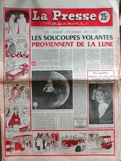

La Presse Magazine n° 429 du 26, titrant : Les soucoupes volantes proviennent de la Lune

À l'aéroport de Marignane (France), un pompier voit un
objet rond et lumineux descendre lentement. Il appelle la tour de contrôle pour faire son rapport. Quand il ressort
de sa tour, l'objet s'est envolé Guieu, JimmyVallée, Jacques: cas n° 1, "Rapport sur l'analyse de 200 observations documentées faites en 1954".
Observation à Arras (France).
Observation à Lunéville (France).
Observation à Constantine (Algérie).
Observation à Sétif (Algérie).
Observation à Ouled Djellal (Algérie).
A Rangeley (Maine), Wilhelm Reich observe durant 2 lumières brillantes se déplacer dans la
vallée, devant la montagne Cas Blue Book non résolu.